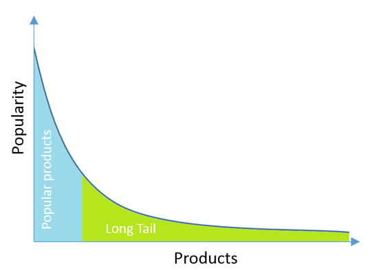

Recommender System
-
Introduction
- Definition
A recommendation system is a computer program that helps a user discover products and content by predicting the user’s rating of each item and showing them the items that they would rate highly.

- Benifit
If you can predict the user’s rating for a product before the user even sees the product, that’s very powerful. That means you can show the user only the things they would like the best and not waste their time with products they won’t care about.
- Usage
- Ranking products by how much a user would like them.
- How similar different products are to each other.
➱ Similar products might appeal to the same users (especially useful in cases where we don’t know much about a particular user yet -> we can recommend similar products).
➱ Figure out if two different users are similar to each other if they have similar preferences products.

- Filtering methodology
- Content-Based Recommender Systems: they recommend based on product attributes
They use the knowledge of each product to recommend new products. They try to recommend products that have similar attributes to a product that the user already liked.
Disadvantage: Excessive specialization (not able to recommend items outside interested categories). - Collaborative Filtering Recommender Systems: they recommend based on similar users
They make recommendations only based on how users rated products in the past, not based on anything about the products themselves.
Advantage: Don't need to know about products, only need user interaction data
Disadvantage:- Cold start (need to collect enough data: user-item interaction)
- Difficult to recommend products to brand new user
- Tends to favor products with lots of reviews over products with few or very less reviews -> it hard for users to discover new releases
- Memory-based: 2 approaches
- 1st approach: Identifies clusters of users and utilizes the interactions of one specific user to predict the interactions of other similar users.
- 2nd approach: Identifies clusters of items that have been rated by user A and utilizes them to predict the interaction of user A with a different but similar item B.
- Model-based:
Based on machine learning and data mining techniques. Goal is to train a model to be able to make prediction of interactions.
- Content-Based Recommender Systems: they recommend based on product attributes
- Prerequisties
(If metadata is all you have available, you can start with content-based approaches. If you have a large number of user interactions, you can experiment with more powerful collaborative filtering)
- You should define the interactions with respect to your system so that data can be extracted.
- The interactions can be defined as explicit or implicit.
- Explicit is characterized by situations such as when the user shows either positive or negative interest in an item, such as ranking or leaving a review.
- Implicit is when the user’s interest is derived from their actions, like searching for or buying an item.
- The larger the number of interactions per user and item, the better the final results will be.
- Typically, there are very popular items that users interact with a lot and others that they don’t, which comprise what is known as the Long Tail. Recommender systems usually work pretty well on popular items, although that’s probably not very interesting to users as they most likely already know about them. The items in the Long Tail are the most interesting ones, because they may not be considered by the user at all if they aren’t recommended. 
- Evaluate a recommender system
- Online methods:
- A/B testing: user reactions are measured given the recommendations made.
- Hard to implement since the only way to run the experiments is by interacting with the system that is already in production.
- Offline methods:
- Ideal for experimental stages
- The data is split into training and validation datasets
- Metrics:
- Recall:
- Precesion:
- RMSE (Root Mean Squared Error)
- MRR (Mean Reciprocal Rank)
- MAP at k (Mean Average Precision at cutoff k)
- NDCG (Normalized Discounted Cumulative Gain)
- Online methods:
- Definition
-
Item2Vec
- Journal Paper
- Implementation: (NOT CHECK YET!)
ctjoy/item2vec
JayveeHe/MusicTaster
lujiaying/MovieTaster-Open - Word2Vec
-
Recommender Systems Specialization Course - University of Minnesota (Coursera)
-
(.....Learning.....)Course 1: Introduction to Recommender Systems: Non-Personalized and Content-Based
-
Course 2: Nearest Neighbor Collaborative Filtering
-
Course 3: Recommender Systems: Evaluation and Metrics
-
Course 4: Matrix Factorization and Advanced Techniques
-
-
Reading materials
-
Books (to read)
- (...reading...) Recommender System - An Introduction (2011) By: Dietmar Jannach, Markus Zanker, Alexander Felferig, and Gerhard Friedrich
- Recommender System - the Textbook (2016) By: Charu C. Aggarwal
- Mining of Massive Datasets (2014) By: Jure Leskovec, Anand Rajaraman, and Jeffrey D. Ullman
- Recommender Systems Handbook (2011) By: Francesco Ricci, Lior Rokach, Bracha Shapira, and Paul B. Kantor
-